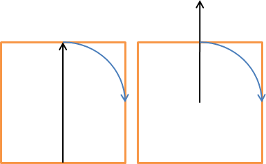

The Image
Morphometric Parameters (Grid) plugin calculates various morphometric parameters
based on digital surface models. These morphometric parameters are:
-
Mean
building height (zH). The average building heights from ground in
meters.
-
Standard
deviation of building heights (zHσ).
-
Maximum
building heights (zHmax).
-
Plan area
index (λP). Fraction of buildings related to total ground area.
-
Frontal
area index (λF). Fraction of building walls in wind direction related
to total ground area.
-
Roughness
length (z0). A parameter of some vertical wind profile equations that
model the horizontal mean wind speed near the ground; in the log wind profile,
it is equivalent to the height at which the wind speed theoretically becomes
zero.
-
Zero
displacement height (zd). The height in meters above the ground at
which zero wind speed is achieved as a result of flow obstacles such as trees or
buildings.
The
morphometric parameters above are used to describe the roughness of a surface
and are included in various local and mesoscale climate models. The parameters
above will vary depending on what angle (wind direction) you are interested in.
Thus, this plugin is able to derive the parameters for different directions.
Preferable, a ground and 3D object DSM and a DEM should be used as input data.
The 3D objects are usually buildings but can also be 3D vegetation (i.e. trees
and bushes). A 3D object DSM with no ground heights makes it also possible to
derive the parameters. This plugin is the same as the
Image Morphometric Parameters
(Point) except that this plugin calculates the parameters for each
polygon object in polygon vector layer. The polygons should preferable be
squares or any other regular shape. To create such a grid, built in functions in
QGIS can be used (see Vector -> Research
Tools -> Vector Grid...).
The Image
Morphometric Parameters (Point) is located at
UMEP -> Pre-Processor -> Urban Morphology -> Image Morphometric
Parameters (Grid).
When you
run plugin, you will see the dialog shown below. It consists of three sections.
The top section sets the parameters for the area of interest where the
morphometric parameters are calculated. You also set the search interval in
degrees and from where the search should take place within each grid. The next
section helps you to specify the input data regarding 3D objects and ground as
well as specifying what grid that should be used. The bottom section is for
specifying output and for running the calculations.
Tick this
in if the search should be performed from one side of the grid to the opposite
side. Tick the other option (Search from grid centroid if the search should
start from the centroid of the grid. Setting the
Search distance can then
allow for the search to extent beyond the grid. See the figure below for
illustration. The left one performs a search using the grid extent whereas the
right illustrates a search from the centroid and extending outside of the grid.

This
decides the interval in search directions for which the morphometric parameters
will be calculated.
Here the
grid polygon layer should be specified
Choose an
attribute from the selected polygon layer that will be used to separated the
different polygon objects from each other. An attribute field of unique numbers
or letters should be used.
Tick this in if isotrophic results (see output) should be added as attributs to the polygon grid attribute table.
Tick this
in if a 3D-object DSM without ground heights is available. 3D objects (e.g.
buildings should be meters over ground.
A raster
DSM (e.g. geoTIFF) consisting of ground and e.g. building height (meters above
sea level).
A DEM
(e.g. geoTIFF) consisting of pixels with ground heights (meters above sea
level).
A DSM
(e.g. geoTIFF) consisting of pixels with object (e.g. buildings or vegetation)
heights above ground. Pixels where no objects are present should be set to zero.
Here,
options to choose methods for roughness calculations regarding zero displacement
height (zd) and roughness
length (z0) are available.
For more information, see the online UMEP manual.
A prefix
that will be included in the beginning of the output files.
A
specified folder where result will be saved.
This
starts the calculations.
This
button closes the plugin.
Two
different files per polygon objects are saved after a successful run. The first
one includes anisotropic result where the morphometric parameter for each wind
direction as specified are included. The second one includes isotropic results
where all directions are integrated into one value for each parameter. If the
raster data includes no data values within a polygon object, this grid will not
be considered in the calculation.
- All DSMs
need to have the same extent and pixel size.